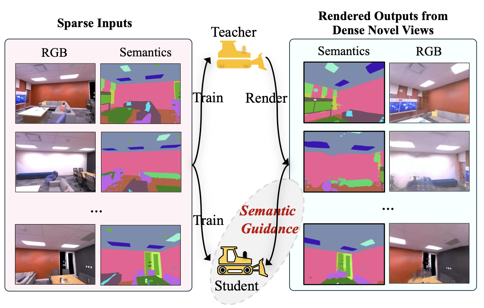
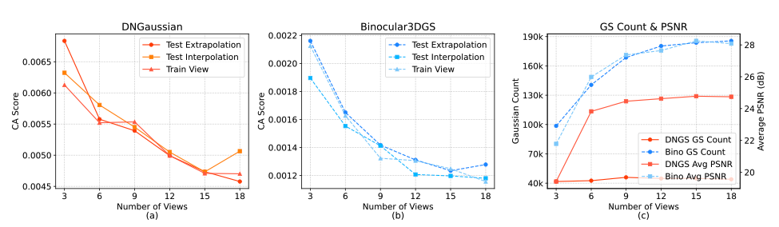
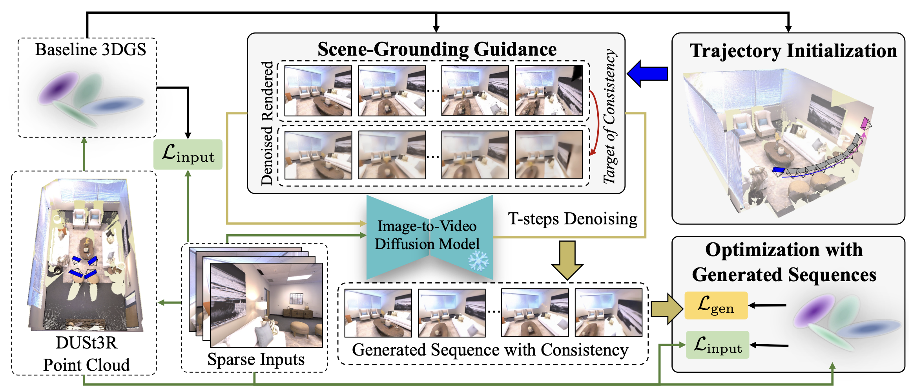
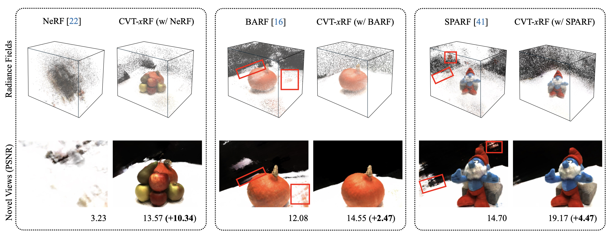
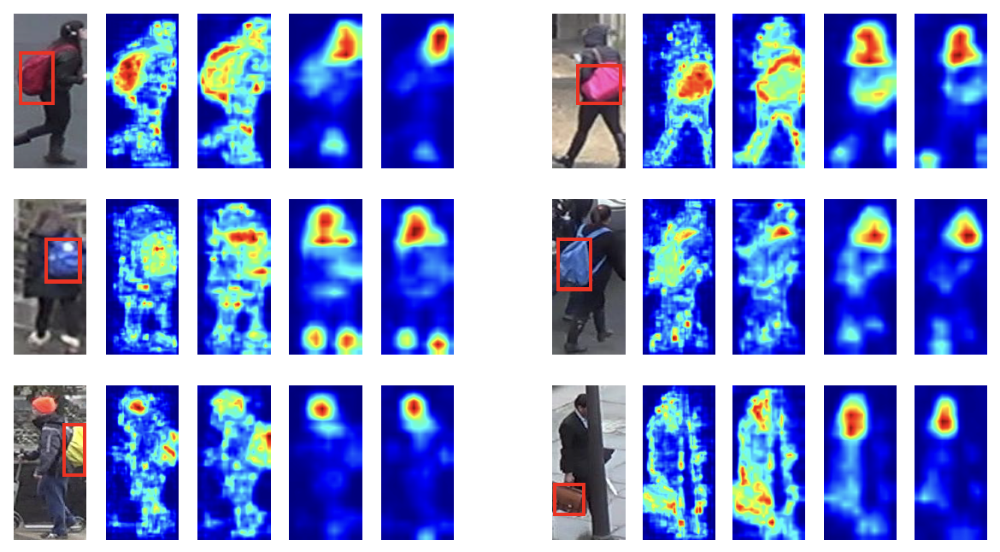

|
Yingji Zhong I'm currently a Ph.D. candidate in Prof. Dan Xu's Vision Group at HKUST. I received my Master's Degree in Peking University, where I was advised by Prof. Shiliang Zhang. I am interested in novel view synthesis, 3D reconstruction, and generation. Recently, I have been studying how to embed 3D consistency in world models. |
{kind=link}
Research |
|  |
Empowering Sparse-Input Neural Radiance Fields with Dual-Level Semantic Guidance from Dense Novel Views
Yingji Zhong, Kaichen Zhou, Zhihao Li, Lanqing Hong, Zhenguo Li, Dan Xu AAAI, 2026 (Oral Presentation) paper A self-improvement pipeline that leverages semantic guidance from a teacher radiance field to regularize a student radiance field for sparse-input novel view synthesis. |
|  |
Quantifying and Alleviating Co-Adaptation in Sparse-View 3D Gaussian Splatting
Kangjie Chen, Yingji Zhong, Zhihao Li, Jiaqi Lin, Youyu Chen, Minghan Qin, Haoqian Wang NeurIPS, 2025 project page / paper / code Introduce a co-adapation metric to interprete the rendering artifacts in sparse-input 3DGS. |
|  |
Taming Video Diffusion Prior with Scene-Grounding Guidance for 3D Gaussian Splatting from Sparse Inputs
Yingji Zhong, Zhihao Li, Dave Zhenyu Chen, Lanqing Hong, Dan Xu CVPR, 2025 (Highlight) project page / paper / code Taming a video diffusion model to generate more consistent sequences to address extrapolation and occlusion issues in sparse-input 3DGS. |
|  |
CVT-xRF: Contrastive In-Voxel Transformer for 3D Consistent Radiance Fields from Sparse Inputs
Yingji Zhong, Lanqing Hong, Zhenguo Li, Dan Xu CVPR, 2024 project page / paper / code Improve the sparse-input neural fields performance by field consistency regularization implemented by contrastive in-voxel Transformer. |
|  |
Progressive Feature Enhancement for Person Re-Identification
Yingji Zhong, Yaowei Wang, Shiliang Zhang IEEE Transactions on Image Processing (TIP), 2021 paper Improve the feature robustness by merging multi-scale feature which is supervised by layer-specific supervision. |

|
Robust Partial Matching for Person Search in the Wild
Yingji Zhong, Xiaoyu Wang, Shiliang Zhang CVPR, 2020 paper / code Address the matching failure caused by misaligned person boxes by leveraging a partial matching technique. |
|
Design and source code from Jon Barron's website |